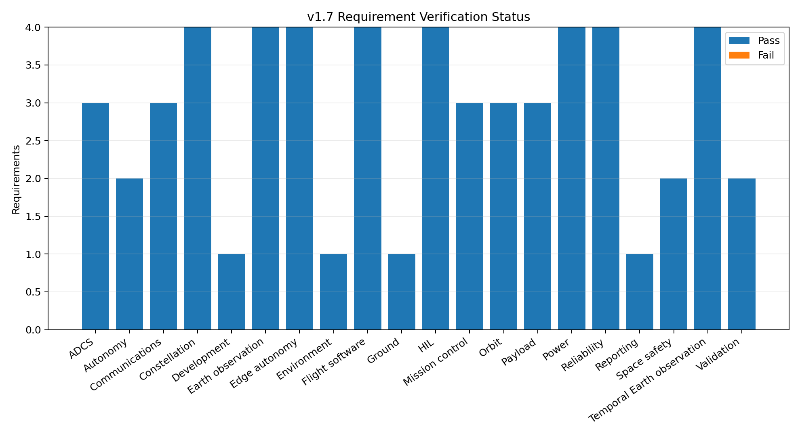
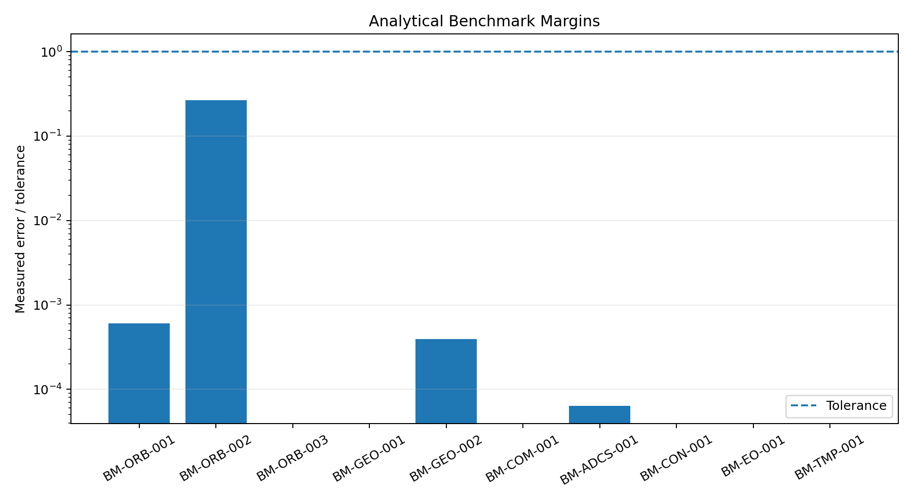

OpenSat Mission Lab v1.7
Release Verification Report
PASS
India Flood Monitoring Demonstrator
Requirements
57 / 57 passed
57 / 57 passed
Benchmarks
10 / 10 passed
10 / 10 passed
Release
1.7.0 temporal Earth-observation and optical/SAR fusion release
1.7.0 temporal Earth-observation and optical/SAR fusion release
Requirement status

| ID | Subsystem | Status | Result | Evidence |
|---|---|---|---|---|
| ORB-001 | Orbit | PASS | 5041 state samples | state_history.csv |
| ORB-002 | Orbit | PASS | model=j2; difference=3428.219 km | dynamics_model_comparison.csv |
| ORB-003 | Orbit | PASS | latitude/longitude bounds satisfied | ground_track.png |
| ENV-001 | Environment | PASS | 106 eclipse windows | sunlight_timeline.png |
| GND-001 | Ground | PASS | 18 contacts | contact_windows.csv |
| PAY-001 | Payload | PASS | 27 access windows | target_access_windows.csv |
| PAY-002 | Payload | PASS | 15 attempts; 84.00 MB generated | imaging_events.csv |
| PAY-003 | Payload | PASS | peak=52.20 MB | payload_storage.csv |
| EPS-001 | Power | PASS | generated=1695.81 Wh | power_history.csv |
| EPS-002 | Power | PASS | SOC=24.64% to 100.00% | battery_state_of_charge.png |
| EPS-003 | Power | PASS | 1 entries | safe_mode_windows.csv |
| EPS-004 | Power | PASS | 1 power-blocked images | imaging_events.csv |
| COM-001 | Communications | PASS | C/N0 histories finite | link_budget_history.csv |
| COM-002 | Communications | PASS | maximum=256.0 kbps | adaptive_data_rate.png |
| COM-003 | Communications | PASS | downlinked=38.26 MB | payload_data_transfer.png |
| ADCS-001 | ADCS | PASS | quaternion norms within 1e-9 | attitude_history.csv |
| ADCS-002 | ADCS | PASS | detumble=30.00 min; saturation=0 | reaction_wheel_momentum.png |
| ADCS-003 | ADCS | PASS | 5025/5026 compliant | pointing_violation_windows.csv |
| FSW-001 | Flight software | PASS | 58 transitions | flight_software_history.csv |
| FSW-002 | Flight software | PASS | accepted=3; rejected=2 | command_log.csv |
| FSW-003 | Flight software | PASS | 1 resets | watchdog_resets.csv |
| FSW-004 | Flight software | PASS | 2011 packets; 99.70% delivery | telemetry_packets.csv |
| MOC-001 | Mission control | PASS | 11 alarms | alarm_log.csv |
| MOC-002 | Mission control | PASS | 18 passes; 152 operations | operations_schedule.csv |
| MOC-003 | Mission control | PASS | mission_control_dashboard.html: present | mission_control_dashboard.html |
| REL-001 | Reliability | PASS | FMEA=12; risks=12 | fmea.csv |
| REL-002 | Reliability | PASS | 200 trials; success=52.00% | monte_carlo_summary.csv |
| REL-003 | Reliability | PASS | 9 anomaly windows | anomaly_events.csv |
| REL-004 | Reliability | PASS | reliability_dashboard.html: present | reliability_dashboard.html |
| VAL-001 | Validation | PASS | max position=0.177651 km; max velocity=0.000193441 km/s | independent_orbit_comparison.csv |
| VAL-002 | Validation | PASS | GMAT, Orekit, JSON request, and CSV template present | external_validation_request.json |
| HIL-001 | HIL | PASS | 50/50 packets; invalid=0 | hil_loopback_results.csv |
| HIL-002 | HIL | PASS | hil_telemetry_stream.ndjson: present | hil_telemetry_stream.ndjson |
| HIL-003 | HIL | PASS | 4/4 acknowledgements | hardware_command_results.csv |
| HIL-004 | HIL | PASS | serial bridge and hardware examples present | hardware/README.md |
| CON-001 | Constellation | PASS | 4 satellites; 5041 samples each | constellation_state_history.csv |
| CON-002 | Constellation | PASS | scheduled=28; decisions=59 | coordinated_imaging_schedule.csv |
| CON-003 | Constellation | PASS | ISL windows=848; network=46.12% | inter_satellite_link_windows.csv |
| CON-004 | Constellation | PASS | shared passes=70 | shared_ground_pass_schedule.csv |
| SSA-001 | Space safety | PASS | events=6; minimum miss=0.733 km | conjunction_events.csv |
| SSA-002 | Space safety | PASS | recommendations=2 | avoidance_maneuver_recommendations.csv |
| OPS-001 | Autonomy | PASS | tasks=30; utility=9244.91 | optimized_tasking_schedule.csv |
| OPS-002 | Autonomy | PASS | events=2; tasks=29 | replanned_tasking_schedule.csv |
| AUT-001 | Edge autonomy | PASS | assessments=17; digest=9510fa4ece51 | autonomy_scene_assessments.csv |
| AUT-002 | Edge autonomy | PASS | triggers=11; priority=11 | autonomy_scene_assessments.csv |
| AUT-003 | Edge autonomy | PASS | targets=5; tasks=16 | autonomous_tasking_schedule.csv |
| AUT-004 | Edge autonomy | PASS | finite assessments=17 | edge_inference_profile.csv |
| EO-001 | Earth observation | PASS | tiles=25 | scene_metadata.json |
| EO-002 | Earth observation | PASS | spectral index statistics present | spectral_index_statistics.csv |
| EO-003 | Earth observation | PASS | F1=0.916; IoU=0.845 | model_evaluation.csv |
| EO-004 | Earth observation | PASS | EO validation artifacts present | earth_observation_dashboard.html |
| TMP-001 | Temporal Earth observation | PASS | shift=(-3,4); RMSE=0.1015->0.0973 | registration_metrics.csv |
| TMP-002 | Temporal Earth observation | PASS | F1=0.992; IoU=0.984 | temporal_model_evaluation.csv |
| TMP-003 | Temporal Earth observation | PASS | new flood=26.35 ha | flood_progression.csv |
| TMP-004 | Temporal Earth observation | PASS | temporal fusion artifacts present | temporal_fusion_dashboard.html |
| REP-001 | Reporting | PASS | 42 registered artifacts present | output_manifest.json |
| DEV-001 | Development | PASS | developer workflows present | .github/workflows/ci.yml |
Analytical benchmarks

| ID | Domain | Status | Measured error | Tolerance | Units |
|---|---|---|---|---|---|
| BM-ORB-001 | Orbit | PASS | 6.051888365302561e-06 | 0.01 | km position closure error |
| BM-ORB-002 | Orbit | PASS | 2.6494951052365863e-11 | 1e-10 | relative error |
| BM-ORB-003 | Orbit | PASS | 0.0 | 1e-08 | km position closure error |
| BM-GEO-001 | Ground geometry | PASS | 0.0 | 1e-09 | km vector error |
| BM-GEO-002 | Ground geometry | PASS | 3.9186209248144715e-13 | 1e-09 | km vector error |
| BM-COM-001 | Communications | PASS | 0.0 | 1e-10 | dB absolute error |
| BM-ADCS-001 | ADCS | PASS | 6.359601310784502e-17 | 1e-12 | rad vector error |
| BM-CON-001 | Constellation | PASS | 0.0 | 0.5 | boolean error |
| BM-EO-001 | Earth observation | PASS | 0.0 | 1e-12 | absolute index error |
| BM-TMP-001 | Temporal Earth observation | PASS | 0.0 | 1e-12 | absolute pixel-value error |
Scope: This verification demonstrates deterministic software behavior, internal consistency, analytical equation checks, and reproducible scenario outputs. It is not flight qualification, regulatory approval, hardware acceptance, or independent validation by a space agency.